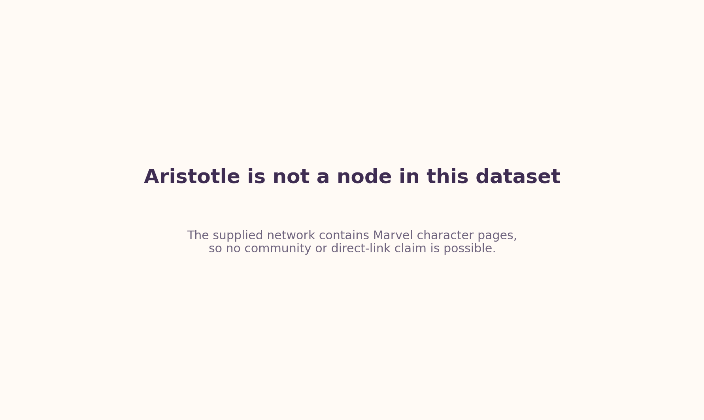

Communities & backbones
We move from individual links to the structures that hold the network together.
The shared data is a 303-node Marvel Wikipedia hyperlink network. This week we compare two community ideas, test a named philosopher against the actual node list, and filter the network down to links that carry unusually concentrated weight.
Louvain vs Infomap
Louvain searches for partitions with high modularity: more within-community edges than a degree-based null expectation. Infomap asks a different question. It compresses the paths of a random walker, looking for groups where information tends to circulate before crossing a boundary.
Those objectives can disagree when a node is a bridge, when communities have different sizes, or when a resolution choice changes which dense region counts as a separate group. The NMI below compares the two assignments without pretending that either method is a historical truth.

The calculated NMI is shown above. Nodes with different assignments are outlined in the static comparison and marked in the interactive view.
In this network, the methods agree enough to reveal a shared mesoscopic structure, but the disagreement is substantial enough to warn against treating a single partition as “the” history of the links.
Interpretation: modularity gives us a density-based map, while information flow gives us a movement-based map. For historical interpretation, the more convincing account is therefore conditional: dense topical clusters are strongest when both methods recover them; bridge nodes and boundary communities should be described as ambiguous rather than forced into one tradition.
Which tradition is Aristotle really in?
The supplied node file is a Marvel Comics character network, not a philosopher network. We searched both node IDs and display names for Aristotle before making any neighborhood or community claim.

Because Aristotle is not a node, the network supports no evidence about his direct links, community membership, or bridging position. The figure records that data limitation explicitly; adding Aristotle by hand would turn a network question into an invented result.
When does the backbone break?
A backbone keeps edges whose weight is unusually concentrated relative to the degree and total strength of their endpoints. Here the weight is derived from reciprocal hyperlinks: one-way ties weigh 1, reciprocal pairs weigh 2. We report alpha as filtering strictness, so larger alpha values keep fewer links. The disparity filter was evaluated over every observed threshold, then three thresholds around the largest giant-component drop were selected.

The largest measured break occurs at the calculated alpha threshold, and the node most associated with the newly removed edges is loading…. This is a graph statement about connectivity after filtering, not a claim about narrative importance.
Does weight change the story?
The unweighted graph treats every undirected pair as one tie. The reciprocal-weighted graph gives a pair weight 2 when both directed hyperlinks exist. We reran Louvain on both and compared the assignments with NMI.

The weighted and unweighted partitions have NMI —, with — nodes moving between assignments. Since these are Marvel characters, the page should be read as a test of hyperlink structure, not as evidence that real-world traditions changed.
Takeaway
Community detection is a lens, not a verdict. Louvain and Infomap expose overlapping but non-identical structure; the backbone analysis identifies a sharp connectivity change around the calculated alpha break; and reciprocal-link weight changes many assignments. The honest conclusion is that this network has real clusters and meaningful boundary sensitivity, so interpretation should preserve both the stable cores and the ambiguous bridges.